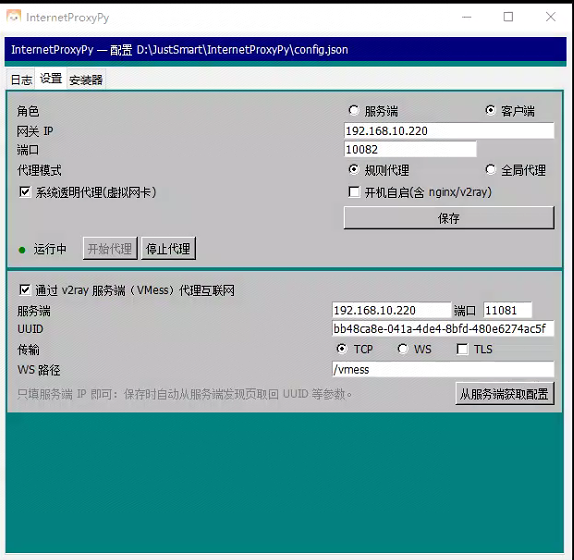

在 .64 浏览器打开 http://192.168.10.220:18081/，能看到服务端发现页即正常。
打不开先找运维：服务端软件未启动、IP 不对或 18081 未放行。
查看任务栏托盘（折叠时先点 ^ 展开）：已有本软件图标说明客户端早就在运行， 单击图标打开界面即可，不要再启动第二个实例；确实没有图标，再双击桌面 连接互联网.exe，UAC 弹窗点「是」。
打开设置页：角色选 客户端，上行选 v2ray（VMess），
服务端填 192.168.10.220，点「从服务端获取配置」自动带出 UUID / 端口 / 传输，保存。
点「开始代理」，等状态变绿色·运行中。日志应出现
透明代理已启用 与 虚拟网卡 DNS 已设为 223.5.5.5, 8.8.8.8。
浏览器打开 www.baidu.com 能正常显示即成功；也可在 PowerShell 执行
Test-NetConnection 192.168.10.220 -Port 10082。
启动桌面的 向日葵远程控制，确认设备显示「在线」， 再从远程电脑发起连接测试一次画面。
ping 192.168.10.220 不通属于正常现象——代理只承载 TCP/UDP，不支持 ICMP。
判断连通性请用浏览器或 Test-NetConnection。

InternetProxyPy 状态 Up，地址 198.18.0.1/24。0.0.0.0/1 与 128.0.0.0/1，下一跳均为 198.18.0.1。10082 由客户端 v2ray 子进程监听（Get-NetTCPConnection -LocalPort 10082）。D:/JustSmart/InternetProxyPy/logs/app.log（单文件 1 MB、保留 3 份）。
界面日志与文件内容一致，出现异常时先看这个文件，再把最后 20 行发给运维。
11080/11081（v2ray）、10082（内置隧道） 与 18081（发现页）。
| 现象 | 原因 | 处理 |
|---|---|---|
| 点开始代理后状态不变绿 | UAC 未允许、10082 被旧进程占用 | 允许 UAC 后重试；日志提示端口占用时，结束残留 v2ray 进程再启动 |
| 能打开 IP 地址、域名全部超时 | 虚拟网卡 DNS 未生效 | 重启代理，确认日志有「虚拟网卡 DNS 已设为 …」；仍失败则重启软件 |
| 日志报「两端时钟相差 N 秒」 | 工控机 CMOS 漂移，超出 VMess 约 90 秒容差 | 以管理员运行会自动按服务端时间校正；未校正时按提示手动改系统时间 |
| 服务端重启后 .64 突然断网 | 服务端依赖的 v2ray / nginx 未随软件启动 | 服务端升级到 26.11.8.10 及以上，每次启动会自动拉起缺失服务；临时可手动点「启动服务」 |
| 网页能开，向日葵显示离线 | 向日葵被单独配置了代理，或仍用旧版本缓存 | 移除向日葵内的代理设置，退出重登；必要时重启向日葵服务 |
发现页 18081 打不开 |
服务端未运行 / IP 变更 / 防火墙拦截 | 联系运维确认服务端软件与 IP；不要擅自修改本机网络配置 |
http://192.168.10.64:10022/health 返回 status=running 即说明客户端软件在线，可远程执行命令排查。
InternetProxyPy 虚拟网卡，
不要在客户端与网关之间再加一层代理。